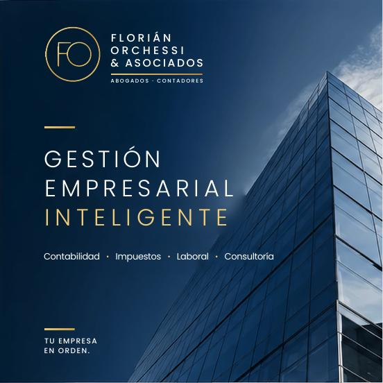

Inicio/Quiénes somos
Sobre la firmaQuiénes somos
Un equipo de contabilidad y derecho, comprometido con su empresa.

Años de vigencia en el mercado
Florián Orchessi & Asociados es una firma con un equipo multidisciplinario integrado por profesionales de Contabilidad y Derecho, comprometidos con brindar a cada cliente la asesoría necesaria para una mejor toma de decisiones en la gestión de su negocio, además de representarlo en la defensa de sus derechos y obligaciones ante las entidades que correspondan.
Contamos con más de 20 años de vigencia en el mercado, lo que nos ha permitido desarrollar un enfoque de trabajo eficiente y sensible a las necesidades particulares de cada cliente.
El sector contable y tributario cambia de forma constante. Por eso, mantenemos actualizado nuestro conocimiento normativo para que la información que recibe cada cliente sea siempre confiable y esté acorde a la regulación vigente.
Servir a nuestros clientes con profesionalismo y eficiencia, proporcionándoles los recursos necesarios y oportunos para la solución de los problemas que genera la gestión empresarial.
Que de la mano de nuestro equipo de profesionales, lleguemos a consolidarnos como el aliado estratégico que nuestros clientes requieren para la gestión de su negocio o empresa, obteniendo el valor agregado que los diferencie de su entorno empresarial, asegurando su liderazgo y sólida expansión en un mercado globalizado y altamente competitivo.
Conozca la firma en 6 páginas
Descargue nuestro brochure con una presentación de la firma y de nuestras soluciones.
